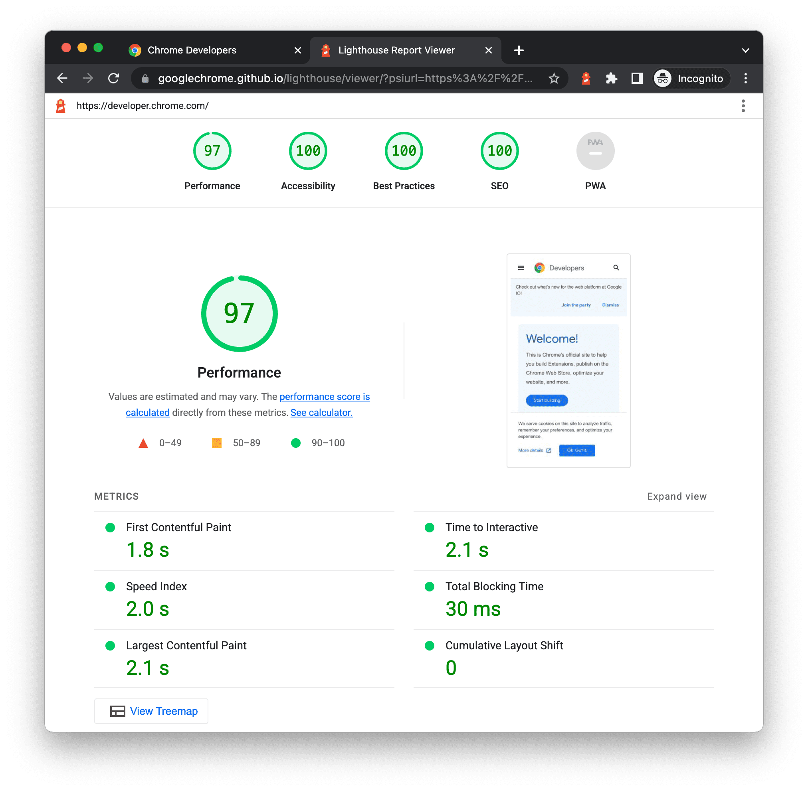

LightHouse
эффективное расширение, которое помогает разработчику улучшать качество веб-страниц. А ещё это расширение с исходным кодом, и разработчики смогут анализировать и решать SEO проблемы. Оно не только тестирует сайт и показывает оценку производительности, но ещё дает конкретные рекомендации: что можно улучшить, чтобы сделать сайт быстрее.
Ключевые особенности:
1.Простота использования. Если вы новичок в SEO, то это может сбить вас с толку. У большинства нет технических знаний для применения сложных инструментов тестирования. LightHouse прост в использовании, анализ сайта выполняется одним нажатием;
2.Постоянное обновление. Данное расширение постоянное обновляется разработчиками Google.
Как в этом работать?
step 1: Загрузите Google Chrome для ПК .
step 2: В Google Chrome перейдите по URL-адресу, который вы хотите проверить. Вы можете проверить любой URL-адрес в Интернете.
step 3: Откройте Инструменты разработчика Chrome .
step 4: Откройте вкладку «Маяк»
step 5: Нажмите «Анализ загрузки страницы» . DevTools показывает список категорий аудита. Оставьте их все включенными.
step 6: Нажмите Запустить аудит . Через 30–60 секунд Lighthouse предоставит вам отчет на странице.
step end: The end
Более подробный гайд на Хабре -> Тык
Применение
Много текста писать сюда не буду просто скажу,что это компактный, но мощный инструмент тестирования, который проверит основные показатели вашего сайта и предложит рекомендации по улучшению его производительности. Lighthouse – ваш личный SEO-инспектор. Веб-разработчики всегда ищут способы улучшить производительность своего сайта и SEO, чтобы получить более высокий рейтинг в Google и других поисковых системах. И это не то, что можно один раз настроить и забыть.
Часто задаваемые вопросы о Google Lighthouse
Как включить Lighthouse в Chrome DevTools?
Lighthouse встроен в Chrome DevTools на вкладке “Lighthouse”. Убедитесь, что у вас установлена последняя версия браузера Chrome, чтобы инструмент работал должным образом.
Должен ли я запускать Google Lighthouse в режиме инкогнито?
ДА. Запустите аудит Google Lighthouse в режиме инкогнито в Chrome, чтобы имитировать работу первого пользователя на сайте. Расширения и файлы cookie могут изменять поведение страницы.
Можете ли вы использовать Google Lighthouse для анализа производительности мобильных устройств?
ДА. Lighthouse предоставляет аудит производительности мобильных устройств для анализа на мобильных устройствах. Вы также можете выбрать типы устройств при запуске Lighthouse.
Какие распространенные проблемы может обнаружить Google Lighthouse?
Некоторые распространенные проблемы включают чрезмерное количество HTTP-запросов, неиспользуемый JavaScript, небезопасные подключения, неправильные SEO-теги и мета-описания, а также недоступные элементы.
Google Lighthouse предназначен только для анализа производительности?
Нет. Google Lighthouse также проверяет SEO, доступность, лучшие практики и прогрессивные критерии веб-приложений. Основными направлениями деятельности являются оптимизация производительности и взаимодействия с пользователями.
Таблица достоинств и недостатков
| + | - |
|---|---|
| Полностью бесплатно | Не обнаружил😅 |
| Доступно в РФ | Не обнаружил😅 |
| Легок в использовании | Не обнаружил😅 |
| Открытый исходный код и частые обновления | Не обнаружил😅 |